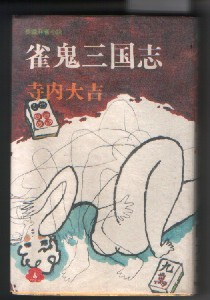

とてもなまめかしい表紙であるが、σ(^-^)のせいではない。（笑） また今ごろ紹介したからといって、昨日や今日、出版された本でもない。出版はいまから約３０年ほど前の昭和47年２月20日。
タイトルから行くと、雀鬼がぞろぞろ出てきてバトルを繰り返し、誰かが天下を統一するストーリーような気がするが、そうではない。名和信夫という“坊や哲”もどきの主人公の旅打ち物語。
著者の寺内大吉氏。昭和35年、「はぐれ念仏」という小説で直木賞を受賞した作家。本職はお坊さんだが、ただの坊さんではない。浄土宗大本山増上寺の第87世法主というえらいお坊さんだ。
文学作品をたくさん書いているが、実は麻雀も大好き。そこで麻雀入門書も何冊か書いている。
| 大吉、麻雀道場 |
鶴書房 |
| プレイシリ−ズ、麻雀道場 |
鶴書房 |
| 麻雀道場 |
鶴書房 |
| 寺内大吉・麻雀入門 |
鶴書房 |
| 大吉、攻め麻雀 |
日本文芸社 |
それだけではない。阿佐田哲也の向こうを張って、麻雀小説を何作か書いている。もちろん直木賞を受賞するくらいだから筆力もあるし、ストーリーもけっこう面白い。
| 雀鬼三国志 |
桃園書房 |
| 雀鬼群盗伝 |
桃園書房 |
| 麻雀小説傑作選 |
桃園書房 |
| 象牙の幻想 |
双葉書店 |
雀鬼三国志はこのうちの１冊なわけだが、どうして今頃、この小説を取り上げたかというと、ちとわけがある。この本の濡れた花芯というエピソードの中に、花芯牌というのが出てくる。
むかしの麻雀牌は象牙や牛骨で出来ていて、竹で裏打ちされている。分離すると困るので、しっかりとくっつけてある。しかし花芯牌は竹部分をグイっとネジってズラしたりすると、竹部分と骨部分と分離するように出来ている。
分離させると、骨牌の背中部分に彫られた秘密の彫り物が現れてくる。どんな模様が彫られているかと云えば、それはそれ、あの、その......とにかくそこに何かの彫りがしてある牌を花芯牌というのだ。。。。ま、とりあえず本文を紹介すると。
催少年は名和の手から  をもぎり取るようにすると、両手の平らに挟み込み、強くねじった。がきりという音が漏れて、牌の黒い背の部分が分離した。 をもぎり取るようにすると、両手の平らに挟み込み、強くねじった。がきりという音が漏れて、牌の黒い背の部分が分離した。
「シノブさん、これですよ」
「・・・・」
背をはめこんだ凸面には、いっぱいに密画が彫り込まれてあった。
「花芯牌というのです」
「花芯牌....」
ため息をもらしながら名和はみほれた。
狭い背面には、緻密な構図がまとめられてあった。春の野らしい。桃の花が咲き乱れる樹下に男女が寄り添っていた。すでに少女の....（以下略）(_ _；
これだけ読んだだけで、みんなこの小説が読みたくなったと思うが（^-^； 、それはともかく、こんな牌が実際にあるのかというと、どうもある（らしい）。
20年ほど前に、行きつけの某居酒屋があった。ご主人はサラリーマンで、奥さんが店を切り盛りしていた。その奥さんは、終戦後、台湾から引き揚げて来た人。あるとき、麻雀の雑談をしていると珍しい牌の話になった。すると奥さんが、花芯牌の話を始めた。
「あのね、浅見さん。私たちは台湾では、いい暮らしをしていた。親戚は花芯牌というのを持っていたくらいなのよ」
「え？、花芯牌？、ママさん、見たことあるの？」
「あるわよ。とにかく裏をはずすと四十八手が、それは見事に彫ってあったんだから」
「そうかぁ....で、その牌、今はどうなってるんだろう？」
「引き上げるとき、親戚は持ち帰ったと思うわよ」
「いやあ、ぜひ見たいなぁ」
（いきなり“売ってくれっ！”とは言えないもんなぁ。おまけに相手は持ち主じゃないんだし。まずは見てからの勝負だと思った（笑））
「いいわよ、一度親戚に聞いといてあげる」
というわけで興味津々、とにかく聞いて貰うことにした。そんな状態だから間違ってもその店から足が遠のくことは無いはずだが、タイミング悪く、ある事があってその店にゆかなくなってしまった。
＃花芯牌の話があってから次に行ったとき中国語の話になって、「カタコトくらいは発音できる」と云ったら、じゃあ「では九連宝灯（きゅうれんぽうとう）は中国語でどう発音する？」と聞くので、「チューリェンパオトン」と云った。すると「違うっ！、発音が悪い！」と決めつけられたので、頭に来て（笑）次から行かなくなった。そりゃ、中国人のようにはゆかないって....
今だったら花芯牌のためなら余裕で我慢してしまうが、当時はまだ若かった。それで２度と行かなかったので、花芯牌は話だけに終わってしまった。しかしママがウソを云ったとも思えない（向こうから出た話だし、あの時点で常連のσ（-_-）にウソをいう必然性がない）。そこで、話はホントだと思っている。
そんな頃に雀鬼三国志を読んだので、よけい花芯牌が頭から離れない。現時点では、麻雀博物館にもない。誰か、どこかで情報を聞いたら教えてくれ〜い。
PS：パーティなどで中国美人が花の胸飾りをしているのを見かけたからといって、間違っても「すてきな花芯（ホワシン）をお持ちですね」なんて褒めちゃいけないよ。軽くてビンタ、へたすると刺されるからね。。。。
|